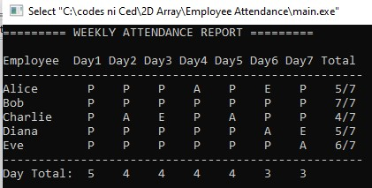
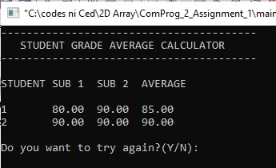
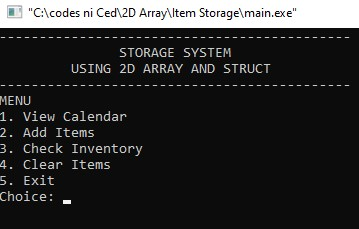

The following are projects where I applied two-dimensional arrays to manage and process structured data. These projects helped me understand how to work with rows and columns of data in a systematic way:

Language: C++ | View Source Code

Language: C++ | View Source Code

Language: C++ | View Source Code
Return: Main Page